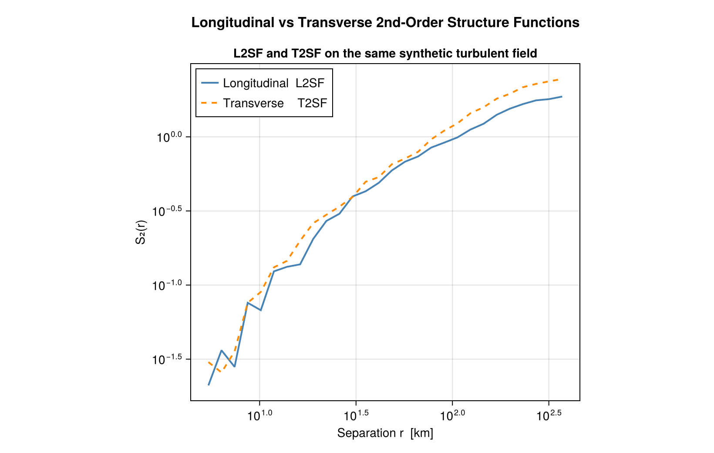

Getting started
For a point list, store positions and vector values as (components, points) matrices. The following example computes a second-order longitudinal structure function using 32 points and a serial CPU backend.
using Random: Random
using StructureFunctions: Calculations as SFC, StructureFunctionTypes as SFT,
StructureFunctionSumsAndCounts, midpoints
using ComputationalBackends: SerialBackend
rng = Random.MersenneTwister(42)
x = Random.rand(rng, 2, 32)
u = Random.randn(rng, 2, 32)
bins = range(0.0, 1.5; length=9)
result = SFC.calculate_structure_function(SFT.L2SFType(), x, u, bins;
backend=SerialBackend())
@assert length(result.values) == length(bins) - 1
(midpoints(result.distance), result.values)(0.09375:0.1875:1.40625, [1.9700631804035444, 1.4384177545013574, 2.417549614784825, 2.065916695116022, 1.8271218660473858, 2.2608032223771923, NaN, NaN])Each value averages (δu ⋅ r̂)² over pairs whose separation lies in (left, right]. Empty bins contain NaN. The output's separation units match x; values have the squared units of u.
T2SFType() averages the transverse part ‖δu‖² − (δu ⋅ r̂)² the same way. On a synthetic two-dimensional field:

Raw sums and counts
Request raw accumulators to combine measurements before averaging: pass the count type and the result type positionally after the bins.
raw = SFC.calculate_structure_function(SFT.L2SFType(), x, u, bins, UInt64, StructureFunctionSumsAndCounts;
backend=SerialBackend())
@assert sum(raw.counts) == 32 * 31 ÷ 2
(raw.sums, raw.counts)([122.14391718501976, 148.15702871363982, 287.68840415939417, 252.04183680415468, 144.34262741774347, 24.868835446149117, 0.0, 0.0], UInt64[0x000000000000003e, 0x0000000000000067, 0x0000000000000077, 0x000000000000007a, 0x000000000000004f, 0x000000000000000b, 0x0000000000000000, 0x0000000000000000])A mutating call adds to the supplied buffers. Clear them explicitly when starting a new independent calculation.
sums = copy(raw.sums)
counts = copy(raw.counts)
SFC.calculate_structure_function!(sums, counts, SFT.L2SFType(), x, u, bins;
backend=SerialBackend())
@assert counts == 2 .* raw.countsFor time series, pass a field with trailing snapshot axes. For repeated calls with fixed preparation, use a workspace as described in Execution backends.